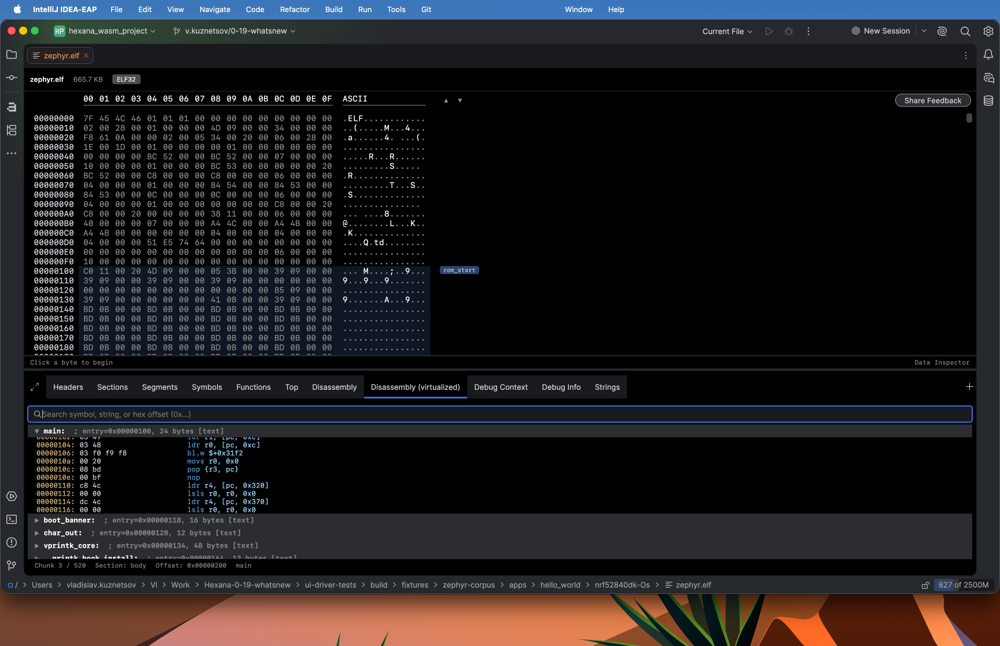
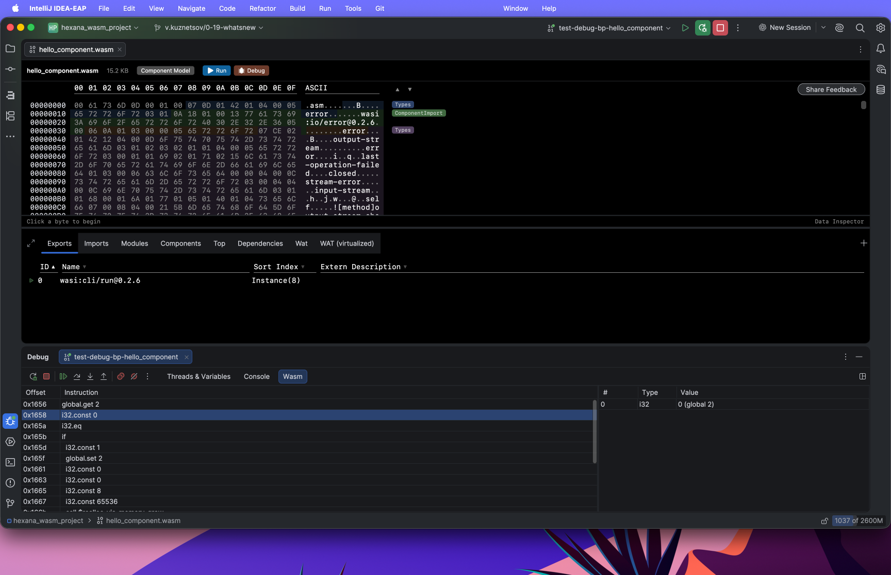

Hexana update
What's New in Hexana 0.19
Hexana 0.19 focuses on Zephyr & Cortex-M and Component Model debugging while refining binary inspection inside JetBrains IDEs.
Zephyr & Cortex-M
Inspect Zephyr firmware with confidence
Hexana now reads Zephyr, ZMK, and similar Cortex-M ELF firmware as Thumb-2, with correct function addresses and GCC source locations.
- Cortex-M firmware ELFs (Zephyr, ZMK and similar) now disassemble as Thumb-2. The M profile recorded in
.ARM.attributesselects the Thumb decoder for the whole file. - The Debug Info tab reported "Debug info present, but Hexana did not resolve any source line rows" for GCC-built ELFs even though
.debug_infoand.debug_linewere present (every Zephyr/ZMK Cortex-M firmware, DWARF4 and DWARF5 alike). GCC emits DWARF version 2/3 line-program headers even in-gdwarf-4/5builds.

Component Model debugging
Follow Component Model modules in the debugger
The Wasm debugger now follows the embedded core module that stopped, keeping the instruction highlight, per-instruction stepping, and operand stack in sync.
- The Wasm debugger tab now works for component-model binaries: every embedded core module is indexed on its own, so the current-instruction highlight, per-instruction stepping and operand stack follow the module the runtime reports the stop in instead of assuming a single core module.

Also in 0.19
- Run and debug firmware with target-aware emulation Run or debug Zephyr-class firmware ELFs with QEMU or Renode, target-aware setup, and clear validation when a target combination cannot run.
- See Flash and RAM budgets at a glance The new Memory tab breaks down ELF Flash and RAM by region, explains runtime-copy data, and reads capacities from linker maps or Zephyr devicetrees.